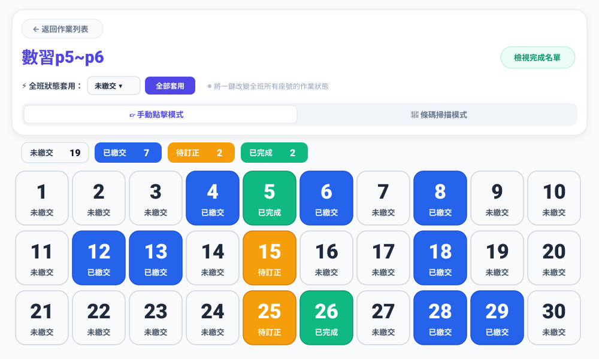
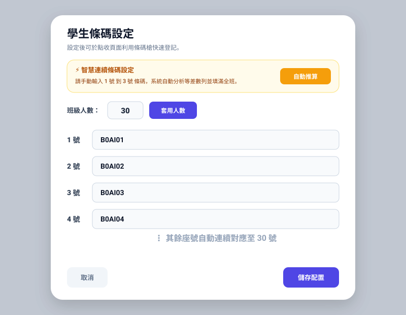
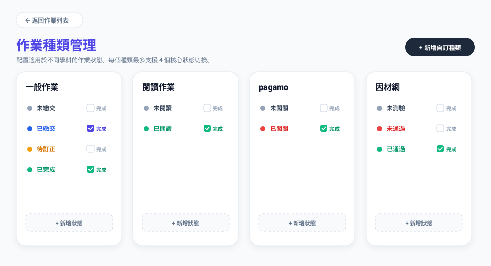
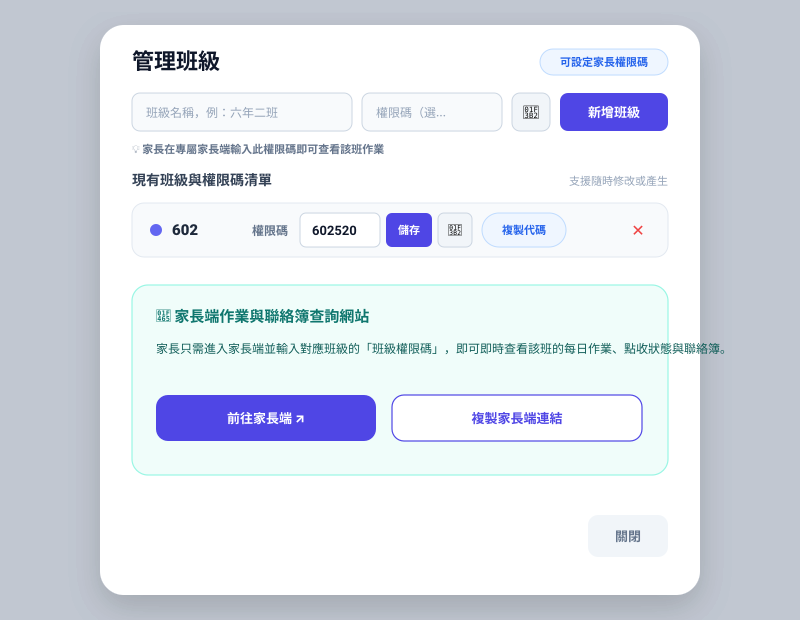
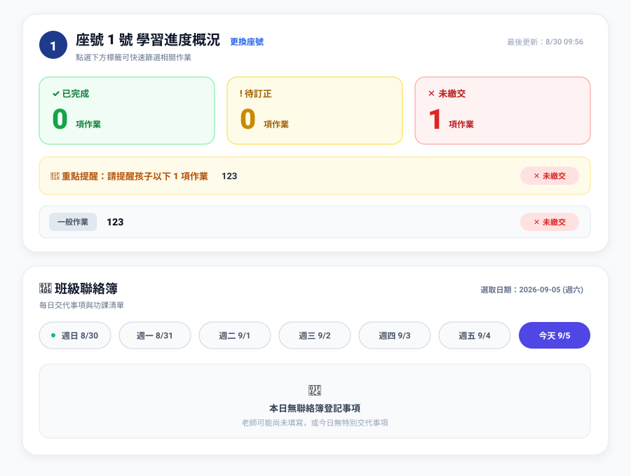
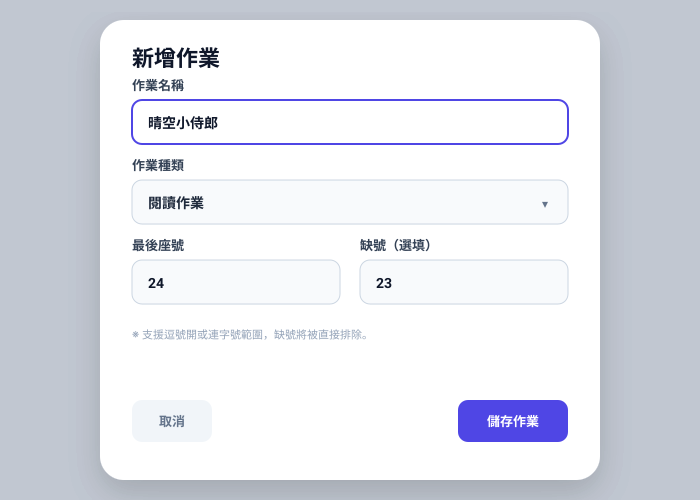
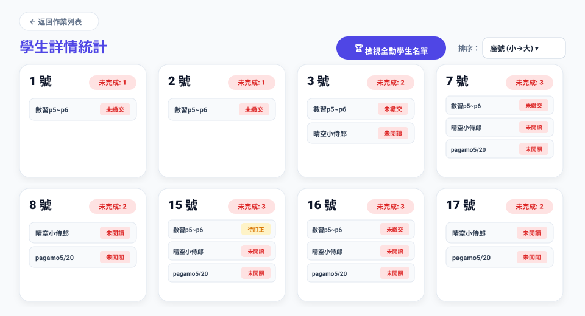
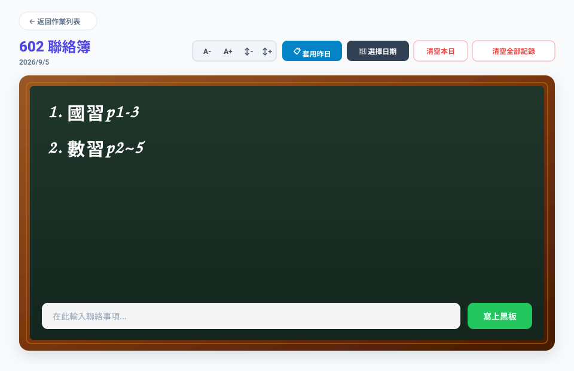

一點，收齊作業
一連，串起親師
親師作業點收X聯絡簿系統 3.0 提供全方位的班級作業點收、條碼掃描辨識與雲端/本地即時同步解決方案。由國一生獨立編程設計，結合即時缺繳名單統計、親師聯絡簿整合與多元存儲，助您輕鬆搞定每日點收作業。
系統更新紀錄 (Changelog)
最新版本 v3.8.1 • 2026/09/24- 📋 一鍵複製「未交催繳純文字」名單：作業卡片右上角與作業點收頁面頂端新增一鍵催繳按鈕，秒產乾淨文字格式（例：
【七賢107班 數學習作 未交名單】共3人：3號、8號、14號）。 - ⚡ Service Worker 離線架構升級：改採網路優先策略 (Network First)，主動清理舊版快取，修復 Cache.put 網路錯誤，確保跨端即時獲取最新功能。
- 🔗 LINE 每日通報專屬查核連結全面同步：通報文案直達獨立家長端看板，名單缺交狀況自動智慧核算。
完整使用教學影片
全新範例示範 • 重新製作中我們正在重新製作更詳盡、更清晰的高畫質實機教學影片，將包含完整的真實範例示範、班級改名、權限碼分享及作業點收全流程！
8 大核心功能全景導覽
由國中一年級學生獨立編程設計，從條碼秒速辨識、多元作業自訂、科任多班支援到家長端即時查核，全方位解決班級點收的所有難題。點擊任一圖片即可放大檢視介面細節。
座號狀態即時切換與雙模式點收
直觀清晰的 30 號座號矩陣，採用高對比色彩標示（未繳灰、已繳藍、待訂正黃、已完成綠）。提供「手動點擊模式」與「條碼掃描模式」隨時無縫切換，並具備「全部套用」下拉選單，一鍵設定全班預設狀態。
- 雙模式切換：點收時可自由切換手動觸控點選或條碼器秒速掃描
- 全部套用選單：一鍵批次將全班套用為「未繳交」或各項作業狀態
- 即時名單統計：頁面底部即時動態精算繳交率、完成清單與未繳座號

※ 本圖為示意圖，與真實使用情況可能有些微差距

※ 本圖為示意圖，與真實使用情況可能有些微差距
學生條碼設定與獨家「智慧等差數列推算」
支援市售任何 USB 或藍牙實體條碼掃描槍。最耗時的學生條碼建檔，本系統提供創新的「智慧連續條碼」演算法：只要輸入前 3 號學生條碼，點擊「自動推算剩餘座號」，系統自動分析等差規律一鍵填滿全班！
- 智慧等差推算：輸入前三碼即自動辨識公差並自動推算全班座號
- 超高掃描相容度：相容 Code128、EAN、Code39、學校自製條碼與各型條碼掃描槍
- 秒速逼逼登記：每本作業只需 0.5 秒，全班 30 本不到半分鐘點收完畢
彈性配置各科作業狀態與自訂完成判定
破除傳統點收只能勾「交/沒交」的死板限制！支援一般作業、閱讀作業、PaGamO、因材網等不同學習情境。每種作業可定義 2 到 4 個流轉狀態，並可自由勾選「哪些狀態計為完成」。
- 預載主流學科模組：一般作業、閱讀作業、PaGamO、因材網任選
- 四段狀態精準掌握：如「未繳交、已繳交、訂正中、已通過」等細緻指標
- 自訂完成條件：彈性勾選哪些狀態納入完成率計算，統計不再失真

※ 本圖為示意圖，與真實使用情況可能有些微差距

※ 本圖為示意圖，與真實使用情況可能有些微差距
多班級快速切換與獨立家長專屬權限碼
不管是導師還是跨班級任教的科任老師，都能在同一個帳號中輕鬆管理多個班級（例如：六年二班、六年五班）。每個班級皆可建立獨立專屬的「家長權限碼」，一鍵複製分享專屬查詢網址，安全又便利。
- 多班切換隨選即用：科任教師跨班授課，秒速切換不同任教班級
- 獨立家長權限碼：各班獨立加密代碼，家長只能查閱自己班級資料
- 一鍵複製專屬連結：附帶權限碼的家長端連結一鍵分享至 Line 班群
個人化作業進度概況與每日聯絡簿查閱
家長完全無須繁雜註冊登入，輸入班級權限碼與孩子座號即可即時查閱！介面清楚劃分「已完成、待訂正、未繳交」，上方設有醒目的「重點提醒」，更能橫向切換查閱一週內的每日黑板聯絡簿。
- 零門檻查閱：無須安裝 App 或記憶密碼，輸入代碼座號立刻看
- 醒目重點提醒：黃底警示框明確條列待補作業與叮嚀事項
- 一週聯絡簿橫向切換：每日課堂交代事項、抄寫作業隨手查閱

※ 本圖為示意圖，與真實使用情況可能有些微差距

※ 本圖為示意圖，與真實使用情況可能有些微差距
智慧座號快速生成與彈性「缺號排除」機制
建立作業僅需數秒！支援下拉選擇作業種類、指定最後座號（系統自動生成 1~N 號）。最貼心的是內建「缺號排除」語法（如輸入 5, 12, 23-25），自動避開轉學生或空號，免去手動逐一刪減座號的困擾。
- 一鍵全班座號自動鋪排：填入最大座號立即完成全班座號初始化
- 智慧缺號過濾語法：支援逗號與連字號範圍語法（例如 5, 12, 23-25）
- 快速選取作業種類：無縫連動作業種類設定，預先載入專屬流轉狀態
全班各座號未完成項目透視矩陣
以卡片矩陣方式全景展示全班所有座號的學習進度。清晰標示每位學生累積的未完成項目數量（如未完成: 1、未完成: 2），並條列其具體欠缺的作業名稱與狀態，方便老師或小排長快速進行課堂追蹤。
- 座號卡片矩陣：一目了然看清每一位同學的欠交狀態
- 未完成數量標籤：紅字醒目提示未交件數，全數完成者綠標徽章
- 具體品項條列：精確載明是哪一本習作或線上平台作業未交

※ 本圖為示意圖，與真實使用情況可能有些微差距

※ 本圖為示意圖，與真實使用情況可能有些微差距
教室擬真黑板聯絡簿與「一鍵套用昨日」
精緻溫馨的深綠色木框黑板粉筆風格，重現教室黑板的熟悉親切感。具備字級大小縮放（A-、A+）與行距調整功能，更有廣受好評的「📋 套用昨日」按鈕，快速複製連續作業項目，告別手忙腳亂。
- 擬真黑板粉筆質感：木框深綠底色與柔和粉筆字跡，教室投影極致清晰
- 字體字級動態縮放：支援 A- / A+ 快速縮放與行距調整，顧及全班視線
- 一鍵套用昨日：連續作業一鍵複製前一日聯絡事項，免重複鍵入
系統公告與動態
隨時掌握親師作業點收X聯絡簿系統 3.0 最新功能與重要訊息。
親師作業點收X聯絡簿系統 3.0 正式上線！全新首頁導覽與親師聯絡簿全面升級
重構全站視覺與首頁入口，引進實體條碼槍秒速辨識、雲端帳號備份、親師聯絡簿整合等多項強大功能。
強化聯絡簿一鍵複製與智慧缺繳名單統計
支援自訂作業種類、多段座號快速產生與排除缺號學生，大幅節省課堂與班級點收時間。
支援 SMTP 電子郵件密碼重設與本機硬碟安全儲存協定
提供高規格帳號防護，免伺服器亦可將資料儲存在使用者專屬檔案中，保障班級隱私。
準備好提升點收效率了嗎？
加入 親師作業點收X聯絡簿系統 3.0，立即體驗無縫銜接的數位化作業管理環境。只需一分鐘即可完成設定並開始點收。